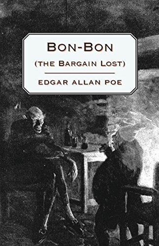
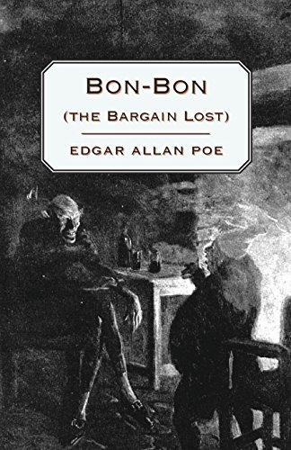

Edgar Allan Poe (Boston, Estados Unidos, 19 de enero de 1809-Baltimore, Estados Unidos, 7 de octubre de 1849) fue un escritor, poeta, crítico y periodista romántico estadounidense, generalmente reconocido como uno de los maestros universales del relato corto, del cual fue uno de los primeros practicantes en su país. Fue renovador de la novela gótica, recordado especialmente por sus cuentos de terror. Considerado el inventor del relato detectivesco, contribuyó asimismo con varias obras al género emergente de la ciencia ficción. Por otra parte, fue el primer escritor estadounidense de renombre que intentó hacer de la escritura su modus vivendi, lo que tuvo para él lamentables consecuencias.
Fue bautizado como Edgar Poe en Boston, Massachusetts, y sus padres murieron cuando era niño. Fue recogido por un matrimonio adinerado de Richmond, Virginia, Frances y John Allan, aunque nunca fue adoptado oficialmente. Pasó un curso académico en la Universidad de Virginia y posteriormente se enroló, también por breve tiempo, en el ejército. Sus relaciones con los Allan se rompieron en esa época, debido a las continuas desavenencias con su padrastro, quien a menudo desoyó sus peticiones de ayuda y acabó desheredándolo. Su carrera literaria se inició con un libro de poemas, Tamerlane and Other Poems (1827).
Por motivos económicos, pronto dirigió sus esfuerzos a la prosa, escribiendo relatos y crítica literaria para algunos periódicos de la época; llegó a adquirir cierta notoriedad por su estilo cáustico y elegante. Debido a su trabajo, vivió en varias ciudades: Baltimore, Filadelfia y Nueva York. En Baltimore, en 1835, contrajo matrimonio con su prima Virginia Clemm, que contaba a la sazón trece años de edad. En enero de 1845, publicó un poema que le haría célebre: «El cuervo». Su mujer murió de tuberculosis dos años más tarde. El gran sueño del escritor, editar su propio periódico (que iba a llamarse The Stylus), nunca se cumplió.
Murió el 7 de octubre de 1849, en la ciudad de Baltimore, cuando contaba apenas cuarenta años de edad. La causa exacta de su muerte nunca fue aclarada. Se atribuyó al alcohol, a congestión cerebral, cólera, drogas, fallo cardíaco, rabia, suicidio, tuberculosis y otras causas.
Poe escribió cuentos de distintos géneros, poesía, crítica literaria y ensayo, éste sobre los temas más variados, además de una novela larga. A lo largo de toda su vida también escribió numerosas cartas.
La crítica suele coincidir al determinar las fuentes literarias de las cuales bebió este autor. En sus primeros cuentos sigue a Boccaccio y Chaucer. También se inspiró en toda la novela gótica inglesa: Horace Walpole, Ann Radcliffe, Matthew G. Lewis y Charles Maturin, entre otros. Conoció bien a los góticos alemanes (E.T.A. Hoffmann, el barón Friedrich de la Motte Fouqué, etc.).
De su país, tuvo muy en cuenta a los pioneros Charles Brockden Brown y Washington Irving. Otros autores ingleses que admiró mucho: Daniel Defoe, Walter Scott, William Godwin y Edward Bulwer-Lytton. Poe se inspiró además en las a veces desaforadas historias que solían aparecer en la revista de Edimburgo Blackwood's Magazine, que el bostoniano llegó a satirizar en sus relatos más estrafalarios: «El aliento perdido», «Cómo escribir un artículo a la manera del Blackwood's», etc.
Julio Cortázar ordena sus relatos de acuerdo con el «interés» de sus temas. «Sus mejores cuentos son los más imaginativos e intensos; los peores, aquellos donde la habilidad no alcanza a imponer un tema de por sí pobre o ajeno a la cuerda del autor». Al traducirlos, los agrupó en: 1. Cuentos de terror; 2. Sobrenaturales; 3. Metafísicos; 4. Analíticos; 5. De anticipación y retrospección; 6. De paisaje; y 7. Grotescos y satíricos. Destaca Cortázar lo expresado por Poe en una carta: «Al escribir estos cuentos uno por uno, a largos intervalos, mantuve siempre presente la unidad de un libro».
Poe es autor de una única novela: La narración de Arthur Gordon Pym (The Narrative of Arthur Gordon Pym of Nantucket) (1838). Se trata de un relato de aventuras marineras de tipo episódico, centrado en su intrépido protagonista, quien encontraría eco posteriormente en las obras de Stevenson. El autor buscó sus fuentes principalmente en antiguas leyendas marineras, como la del Holandés errante, y en sus lecturas de Daniel Defoe y S. T. Coleridge («la afinidad más acusada es con La balada del viejo marinero, ese alma agónica que alcanza la vida a través de la muerte», según Levin). Debido a la abundancia de detalles macabros que contiene y a su indescifrable desenlace, la obra ha estado siempre rodeada de polémica. Esta novela fue muy valorada por los surrealistas, que destacaban en ella su maestría en la recreación de elementos inconscientes. Por este motivo también ha sido muy estudiada por el psicoanálisis. Julio Verne escribió una continuación: La esfinge de los hielos.
Probablemente, de no haber tenido que trabajar de periodista, Poe se habría dedicado en exclusiva a la poesía. «Razones al margen de mi voluntad me han impedido en todo momento esforzarme seriamente por algo que, en circunstancias más felices, hubiera sido mi terreno predilecto», manifestó en el prólogo a El cuervo y otros poemas. Este será su género más controvertido y el que le granjeará las peores críticas.
Poe ejerció el ensayo sobre los temas más variados: la larga meditación cosmológica «Eureka», los comentarios breves reunidos en Marginalia, y los trabajos monográficos «Criptografía», «Filosofía del moblaje», «Arabia pétrea», «El jugador de ajedrez de Maelzel», etc.
Poe vivió siempre aislado de las corrientes culturales dominantes en su país, y sin embargo se embarcó en una batalla crítica que le ocupó los últimos años de su vida. En esta faceta son destacables sus reseñas sobre Longfellow, Dickens y Hawthorne. La cultura de que hace gala en sus críticas es abundante, pero no todo lo asombrosa que él intentó hacer ver; presentaba grandes lagunas. No hay que olvidar que su educación académica se redujo a sus años de colegio y al único año que pasó en la Universidad de Virginia. Según Cortázar, su acceso a las fuentes bibliográficas directas se veía casi siempre reemplazado por centones, resúmenes, exposiciones de segunda o tercera mano, aunque su inteligencia y su memoria hacían maravillas. Un buen ejemplo de lo heterogéneo de sus gustos, su agudeza y sensibilidad, puede verse en el conjunto de ensayos titulado Marginalia, que, en palabras de Cortázar, «proporciona una clara visión de su latitud cultural, sus intereses y sus ignorancias». En uno de estos ensayos definió la crítica como una obra de arte.
El alcance de la influencia de Poe en todos los ámbitos literarios es inabarcable. El crítico David Galloway ha resaltado que la misma se basa en «la fuerza de su profunda inteligencia creadora que pudo hacer cristalizar actitudes, técnicas e ideas que nos parecen particularmente modernas». El estudioso español Félix Martín menciona concretamente sus repercusiones en el simbolismo francés, en la estética del decadentismo inglés, en la ficción detectivesca, en el desarrollo de la figura narrativa del Doppelgänger (el doble), así como en las teorías formalistas y estructuralistas contemporáneas. Otras influencias igualmente patentes: su incidencia en la ciencia ficción y la literatura terrorífica, en el absurdismo grotesco del gótico sureño, su impacto estético entre los trascendentalistas norteamericanos, y el alcance de su filosofía científica y de sus conocimientos psicológicos y parapsicológicos, así como el de su crítica literaria.
Durante toda su vida, Poe fue principalmente reconocido como crítico literario. Su amigo, también crítico, James Russell Lowell, lo llamó «el crítico más exigente, filosófico y sin miedo a obras imaginativas que ha escrito en América», aunque se preguntaba si alguna vez utilizaba ácido prúsico en lugar de tinta. Lowell llegó también a afirmar: «No conocemos a nadie que haya desplegado unas habilidades más variadas y sorprendentes». También muy conocido en su tiempo como escritor de ficción, fue uno de los primeros autores estadounidenses del siglo XIX en llegar a ser más popular en Europa que en su país. El respeto que se le tiene en Francia es debido principalmente a las tempranas traducciones de su obra por parte de Charles Baudelaire, traducciones que pronto fueron consideradas definitivas en toda Europa.